2022年北京市中考数学真题 · 数学解答题 第20题 · 对应解析
20. 下面是证明三角形内角和定理的两种添加辅助线的方法，选择其中一种，完成证明．
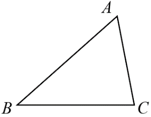 三角形内角和定理：三角形三个内角和等于180°，已知：如图， 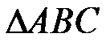 ,求证： 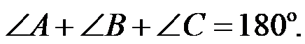 | |
方法一 证明：如图，过点A作 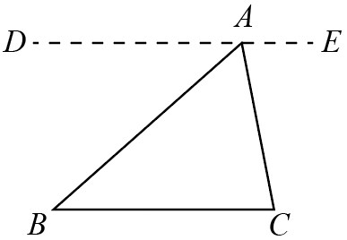 | 方法二 证明：如图，过点C作 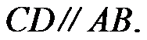 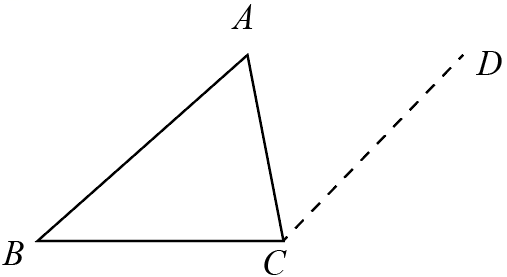 |
【答案】答案见解析
【解析】
【分析】选择方法一，过点 作，依据平行线的性质，即可得到
作，依据平行线的性质，即可得到
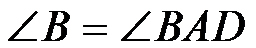
，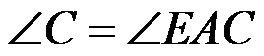
，再根据平角的定义，即可得到三角形的内角和为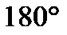
．【详解】证明：过点作，
则，． 两直线平行，内错角相等）
点，，
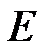
在同一条直线上，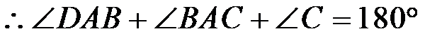
．（平角的定义）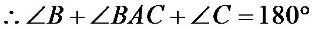
．即三角形的内角和为．
【点睛】本题主要考查了平行线的性质以及三角形内角和定理的运用，熟练掌握平行线的性质是解题的关键．